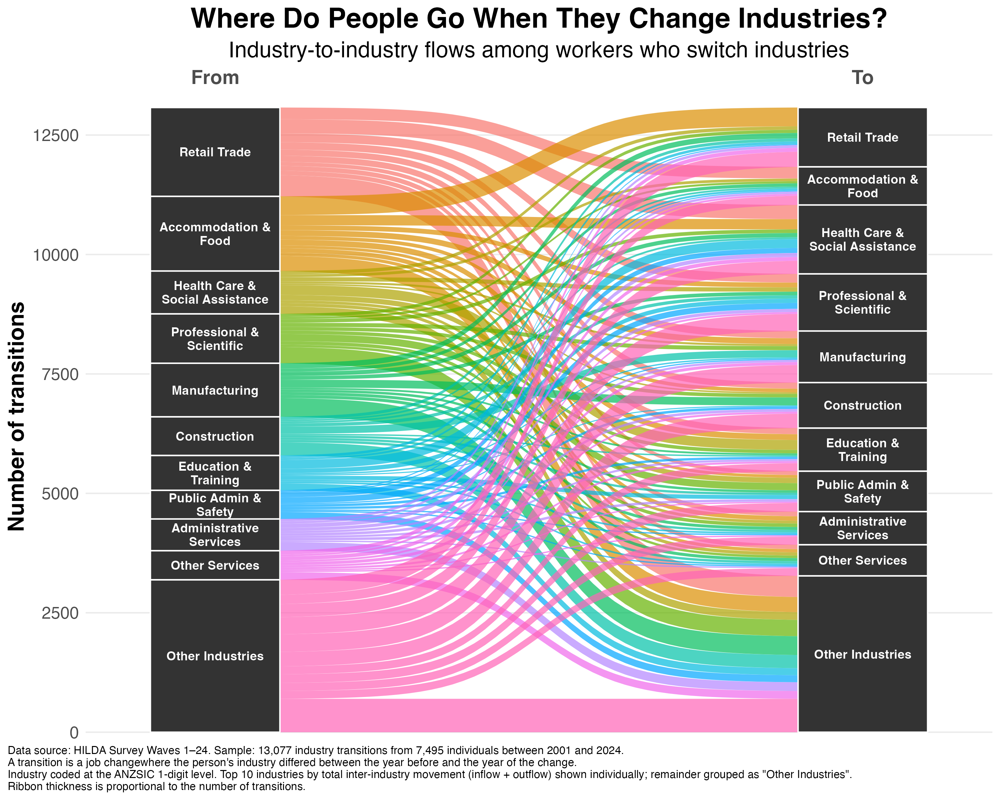

I've shared some research over the last few weeks (here and here) showing that people experience a bump up in mental health after changing industries, but not when changing jobs within the same industry. And the elevated mental health among these industry-switchers remains for the next several years.
One follow-up question I received was, 'What do those industry transitions look like?' What industries do people transition from, and where do they move to?
The figure below maps this out, using more than 13,000 industry changes from more than 7,000 people working in Australia between 2001 and 2024. I've kept the top 10 industries by volume of inter-industry movement and grouped the rest into "Other Industries". The ribbon thickness reflects the number of transitions between each pair of industries.

Here are a few interesting findings:
1️⃣ Top 3 industries by exit rate (per 1,000 person-years worked in that industry):
- Accommodation & Food — 118
- Arts & Recreation — 112
- Administrative Services — 107
This means about 1 in 9 people working in Accommodation & Food leave the industry each year. This makes sense, as hospitality often leans on casual work and entry-level roles, which many people eventually move away from.
2️⃣ Top 3 industries by entry rate (per 1,000 person-years):
- Administrative Services — 112
- Rental & Real Estate — 93
- Mining — 91
Interestingly, Administrative Services shows up on both lists, which suggests that there's a lot of churn in this industry overall. The high exit and high entry rates imply that many people rotate through it rather than building careers in it. The presence of Mining and Rental & Real Estate on this list likely reflects the fact that both have experienced periods of growth in the last two decades.
3️⃣ Top 3 over-represented transitions (how much more often the move happens than industry sizes alone would predict.):
- Health Care → Education — 3.3×
- Mining → Construction — 3.3×
- Construction → Mining — 3.1×
The Mining–Construction loop makes intuitive sense. These industries have overlapping skill requirements and similar work environments. The Health Care → Education flow is more interesting and may reflect clinicians moving into teaching, training, or academic roles.